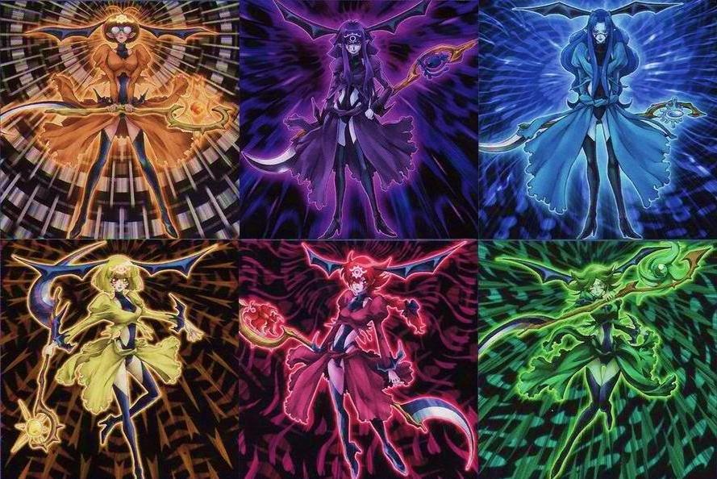

Mia Callisto, personagem original.
Aqui faremos uma introdução completa da personagem
Aqui faremos uma introdução completa da personagem

| Nome | sexo | Idade | Profissão | título |
|---|---|---|---|---|
| Mia Callisto | Feminino | 13 | Bruxa | Mestra das marionetes |
Ela é uma linda e jovem garota com longos cabelos loiros e olhos azuis. Normalmente, ela usa um vestido preto gótico com vários laços.
Uma Garota bem pacífica e distante. Ela costuma ter muito mais proximidade de marionetes do que de humanos, preferindo a companhia de marionetes muito mais.
| Marionete | Nome | Tipo | habilidade |
|---|---|---|---|
|  | Fortune Ladys | diverso | Cada Fortune Lady manipula um elemento diferente, fogo, água, ar, terra, luz e trevas. |
 |
Ecclesia | Ataque | Manipulação de Luz, proteção, purificação. |
 |
Ancient Fairy Life Dragon | Controle | Manipulação da Natureza, cura, purificação |
 |
Bloody Rose | Ataque/Controle | Manipulação das chamas, manipulação das plantas. |
 |
Dark Matter | Ataque | Manipulação da trevas. |
 |
Silent Magician Zero | Suporte/ataque | magias de silence, magias negras, magias de Controle. |
 |
Tsurara | Controle | Manipulação do gelo. |
 |
Galaxy-Eyes Tachyon Dragon | Ataque | Manipulação do tempo. |
 |
Astrograph Magician | Controle | Manipulação das estrelas, manipulação do espaco. |